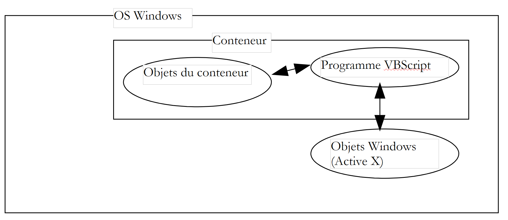
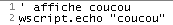
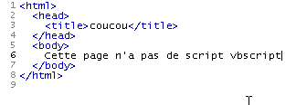
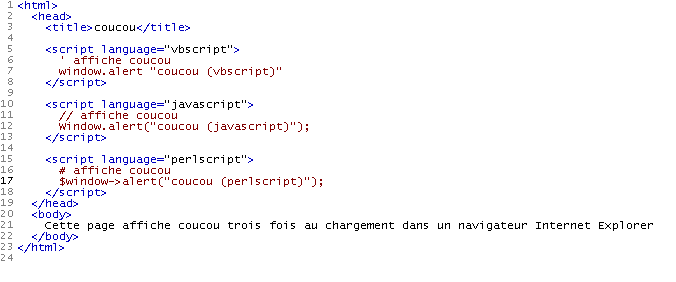
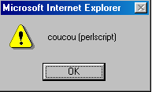
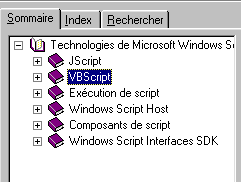
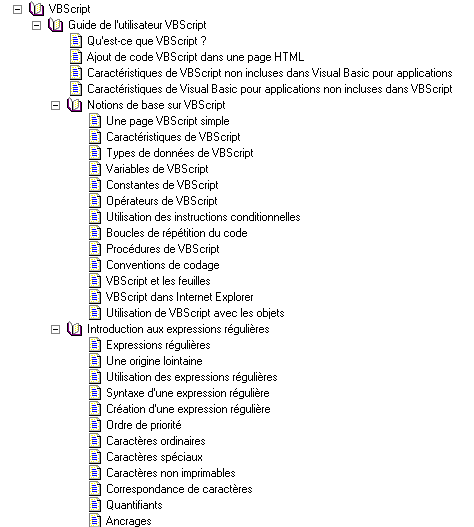

2. VBSCRIPT 执行上下文
2.1. 简介
VBScript 程序并非直接在 Windows 中运行，而是运行在一个容器内，该容器为其提供执行上下文以及若干特定对象。此外，VBScript 程序还可以使用 Windows 系统提供的对象，即所谓的 ActiveX 对象。
 |
在本文档中，我们将使用两个容器：Windows Scripting Host（通常简称为 WSH）和 Internet Explorer 浏览器（下文有时简称为 IE）。此外还有许多其他容器。例如，MS-Office 应用程序就是一种名为 VBA（Visual Basic for Applications）的 VB 变体的容器。 此外，还有许多 Windows 应用程序允许用户突破应用程序本身的限制，通过开发可在应用程序内部运行并利用其特定对象的程序来实现这一目标。
VBScript 程序运行的容器起着至关重要的作用：
- 不同容器向 VBScript 程序提供的对象各不相同。例如，WSH 为 VBS 程序提供了一个名为 WScript 的对象，该对象允许访问主机上的网络共享和打印机等资源。而 IE 则为 VBS 程序提供了一个名为 Document 的对象，该对象代表正在查看的整个 HTML 文档。 VBS 程序随后可以操作该文档。而 Excel 则为 VBA 程序提供代表工作簿、工作表、图表等的对象——实际上，就是 Excel 处理的所有对象。
- 虽然容器中的对象赋予了 VBScript 程序强大的功能，但有时也会限制其某些功能。例如，出于安全原因，在 IE 浏览器中运行的 VBScript 程序无法访问主机上的磁盘。
因此，在讨论 VBScript 编程时，必须明确程序正在哪个容器中运行。
在 Windows 系统中，VBScript 并非 WSH 或 IE 容器中唯一可用的语言。例如，您还可以使用 JScript（即 JavaScript）、PerlScript（即 Perl）、Python 等。乍看之下，这些语言中的许多似乎都优于 VBScript。然而，VBScript 具有一些显著优势：
- VB及其变体VBScript和VBA在Windows系统中非常普及。掌握这门语言似乎必不可少。
- 程序的强大之处在于可用的对象，而非语言本身。其中许多对象是由容器提供的，而非语言本身。
VBScript的一个缺点是无法移植到Windows以外的系统（如Unix）上。而其竞争对手——JavaScript、Perl和Python——则可以。如果您需要在异构系统上工作，在不同系统中使用同一门语言可能会带来好处，甚至必不可少。
2.2. WSH 容器
WSH（Windows 脚本宿主）容器允许用各种语言（如 VBScript、JavaScript、PerlScript、Python 等）编写的程序在 Windows 环境中运行。要在 WSH 中使用某种语言，必须遵循一项标准。任何符合该标准的语言都可以在 WSH 中执行。可以预见，在 WSH 中运行的语言列表可能会不断扩展。 容器为所执行的程序提供对象，这些对象赋予了程序真正的强大功能。由于所有语言都使用同一组对象，这往往会模糊语言之间的差异。因此，选择一种语言而非另一种，往往取决于个人偏好，而非性能因素。
WSH 中的程序通过两个可执行文件运行：wscript.exe 和 cscript.exe。wscript.exe 通常位于 Windows 安装目录中，通常称为 %windir%：
C:\ >echo %windir%
C:\WINDOWS
C:\>dir c:\windows\wscript.exe
WSCRIPT EXE 123 280 19/09/01 11:54 wscript.exe
L'exécutable cscript.exe se trouve lui sous %windir%\command :
C:\>dir c:\windows\cscript.* /s
Répertoire de C:\WINDOWS\COMMAND
CSCRIPT EXE 102 450 26/06/01 17:49 cscript.exe
wscript 中的“w”代表 Windows，cscript 中的“c”代表控制台。脚本既可以使用 wscript 也可以使用 cscript 运行。两者的区别在于消息在屏幕上的显示方式：
- wscript 会在窗口中显示
- cscript 直接在屏幕上显示
以下是一个名为 hello.vbs 的脚本，它会在屏幕上显示“hello”：

让我们打开一个 DOS 窗口，并依次使用 wscript 和 cscript 运行它：
DOS>wscript coucou.vbs

DOS>cscript coucou.vbs
Microsoft (R) Windows Script Host Version 5.6
Copyright (C) Microsoft Corporation 1996-2001. Tous droits réservés.
coucou
上文清晰展示了这两种模式的区别。在本文档中，我们将几乎完全使用 cscript 控制台模式。该模式适用于所谓的“批处理”应用程序，即无需用户通过键盘进行交互的应用程序。请注意先前结果中的两点：
- 我们假设可执行文件 wscript.exe 和 cscript.exe 均位于计算机的“PATH”环境变量中，因此只需输入其名称即可启动。如果并非如此，我们本应在此处写入：
- 请注意，本示例及本文档其余部分所使用的 WSH 版本均为 5.6。
- 该脚本的源文件扩展名为 .vbs。这是 VBScript 脚本的扩展名；JavaScript 脚本则使用 .js 扩展名。
cscript 程序具有多种启动选项，可通过不带参数运行 cscript 来查看：
//nologo 参数可抑制显示 WSH 标题栏：
2.3. WSH 脚本的结构
我们刚刚看到了我们的第一个脚本：hello.vbs
我们提到过，.vbs 文件扩展名表示这是一个 VBScript 脚本。但这并非强制要求。我们也可以将脚本放在一个扩展名为 .wsf 的文件中，形式如下，且更为复杂：

运行此脚本将产生以下输出：
WSH 脚本可以混合使用多种语言：

运行此脚本将产生以下结果：
我们将注意以下几点：
- WSH 容器并不局限于特定语言。一个 WSH 脚本可以在扩展名为 .wsf 的文件中混合使用多种语言
- 该脚本随后被封装在 <job id="..."> ... </job> 标签内
- 在应用程序（即作业）中，不同代码段所使用的语言通过 <script language="...."> .... </script> 进行标记
- 这种标记语言有一个名称：XML，即 eXtended Markup Language（扩展标记语言）的缩写。XML 本身并不定义任何标签，而是定义了组织标签的规则。因此，我们应说 WSH 脚本中使用的标记语言遵循 XML 标准。
今后，我们将仅在 .vbs 文件中使用 VBScript。
2.4. WSCRIPT 对象
WSH 容器为执行的脚本提供了一个名为 wscript 的对象。对象具有属性和方法：
 |
一个 Obj 对象具有若干属性，这些属性决定了其状态。因此，一个温度计对象可能具有一个 temperature 属性。该属性是温度计状态的一个方面。另一个方面可能是它所能承受的最高温度 Tmax。
Obj 对象可能具有方法 Mj，允许外部代理：
- 确定其状态
- 改变其状态
因此，如果我们的温度计是电子的，它可能有一个 turnOn 方法来开启它，另一个 turnOff 方法来关闭它，以及另一个 display 方法，在达到平衡温度时显示该温度。在编程术语中，方法是一种可以接受参数并返回结果的函数。
在 VBScript 中，Obj 对象的 Pi 属性写为 Obj.Pi，Mj 方法写为 Obj.Mj。WSH 中的 wscript 对象是一个重要的对象，因为它为脚本提供了多种方法。例如，其 echo 方法允许你显示一条消息。该方法的语法如下：
参数 arg1、arg2、...、argn 的值随后将显示在窗口中（通过 wscript 执行时）或屏幕上（通过 DOS 下的 cscript 执行时）。
2.5. Internet Explorer 容器
我们之前提到过，Internet Explorer 可以作为 VBScript 的容器。让我们通过一个简单的示例来说明这一点。下面是一个名为 coucou2.htm 的 HTML（超文本标记语言）页面，其中不包含任何 VBScript。
21

直接在 Internet Explorer 中加载该页面（文件/打开）会得到以下结果：
 |
coucou2.htm 文件的内容向我们展示了 HTML 是一种标记语言。了解 HTML 意味着要掌握这些标签。它们的主要目的是告诉浏览器如何显示文档。HTML 虽未严格遵循 XML 标准，但与之相似。
在 coucou2.htm 中，有两条分别标记为 1 和 2 的信息。我们也在生成的显示中包含了它们。标签 <title>...</title> 导致信息 1 显示在浏览器的标题栏中，而标签 <body>..</body> 导致信息 2 显示在浏览器的文档区域中。
我们不再深入探讨 HTML。现在，让我们通过添加一段 VBScript 来修改 coucou2.htm 文件，并将它重命名为 coucou1.htm：

该 VBScript 被放置在 <head>...</head> 标签内。它本可以放置在其他位置。当页面首次加载时，它会显示“hello”。这里，浏览器必须是 Internet Explorer，因为只有该浏览器是 VBScript 的默认运行环境。最终显示效果如下：

随后是页面的正常显示：

执行的脚本如下：

虽然 WSH 容器为脚本提供了一个名为 wscript 的对象，允许通过其 echo 方法进行输出，但 IE 则为脚本提供了一个 window 对象，允许通过 alert 方法进行输出。因此，要在 WSH 中显示“hello”，我们需要编写 wscript.echo "hello"；而在 IE 中，则需编写 window.alert "hello"。我们还可以在此演示，实际上在 IE 容器中可以使用多种语言。 我们将重新审视之前在 WSH 中展示的示例，该示例位于名为 hello3.htm 的页面中：

当 IE 加载此页面时，它首先会显示三个信息窗口：
 |  |  |
然后才显示最终页面：

2.6. WSH 帮助
WSH 附带了一个帮助系统，通常位于“C:\Program Files\Microsoft Windows Script\ScriptDocs”文件夹中。对于 WSH 5.6 版本，帮助文件名为“SCRIPT56.CHM”。只需双击该文件即可访问帮助。在桌面上创建一个该文件的快捷方式会非常方便。
启动后，您将看到如下界面：

该帮助文档包含 WSH 容器以及 VBScript 和 JavaScript 语言的相关说明。无论是初学者还是经验丰富的程序员，这都是不可或缺的工具。您可以通过以下几种方式使用此帮助：
- 如果您还不确定要查找什么，只是想浏览可用内容，可以使用上方的“目录”选项卡。例如，您可以查看 VBScript 的相关内容：

在 VBScript 帮助中，您会发现许多本文档未包含的信息。
- 您可以搜索具体内容，例如如何使用 VBScript 的 MsgBox 函数。此时，请使用“搜索”选项卡：

帮助文档会显示所有与搜索词相关的主题。通常，最先建议的主题相关性最高。本例中正是如此，最先建议的主题就是正确的。只需双击该主题即可查看相关信息：